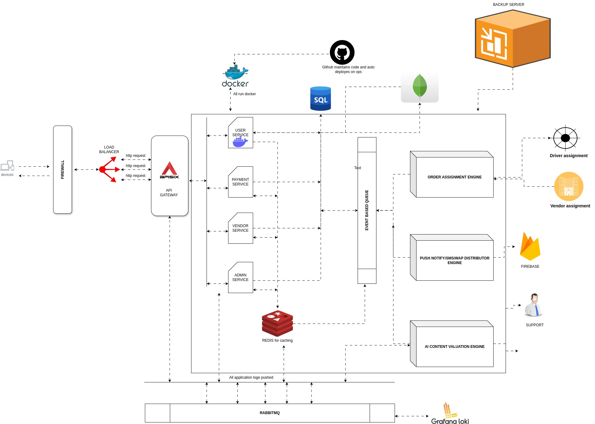

This diagram represents the backend architecture I designed and implemented for the NIRVI startup, with a focus on scalability, fault isolation, asynchronous processing, and operational visibility.
The source code is private due to business reasons, but the system design and engineering decisions are production-grade.